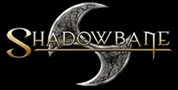
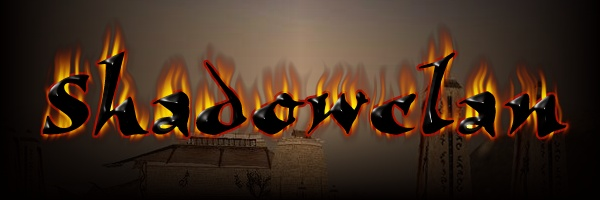
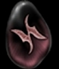

|  |  |  |
| Shadowbane Beta Goals |
Shadowclan Message Boards |
Guild Structure |
Joining and Character Creation |
History | Irekei Language |
Ways of The Clan |
Contact Webmaster |
|
| Irekei Roleplay |
Shadowclan Beliefs |
|||||||
|
Ways of the Clan
We call the deserts our home, for to live in the Greenlands is
to make oneself soft and weak, as the fir'khanim. Young Irekei are tested from
birth. Those who are not strong and quick enough to be worthy of The Dragon
are left to the mercies of the wastelands. Pillaging and scavenging are part
of every Irekei's life. The desert is a harsh teacher where few can survive
without proper equipment. We have learned to make do with what we can gather
from the land and from those who are weaker. To be called 'soft' is a great
insult in Irekei culture, for it implies that the Irekei in question has taken
on undesirable traits from the fir'khanim.
To betray your Clan is to betray yourself. To be cast from the Clan is
the worst punishment imaginable to any Irekei. Such outcasts are known
as vrek, and their khar'ika is dimmed; marked for any Irekei
to see. They are shunned by all virakt and inevitably end up committing
themselves to the Dragon deep within the Burning Sands. No markers are
erected for them, and the scouring Skath, the fearsome desert wind,
quickly reduces their bones to dust.
The desert is the Irekei. Its resources are ours. Its sands
are ours. These are the testing grounds of our children, that they might
live or die by the desert’s tests of strength and will. The desert is
not for the fir’khanim, except to moisten with their blood. These
lands are holy to us. We will allow no fir’khanim to gain a foothold
in the desert, or even to walk upon the sands without our permission.
It is rumored that the Shadowclan keeps a 'Forbidden City' deep within
the desert where fir'khanim are never allowed, it's true name
never uttered where outsiders might overhear. Supposedly, some of the
greatest works of Irekei artisans can be found there in the form of
great murals and shrines to the Dragon. Similarly, it is only there
that many secret Irekei arts and skills are taught.
|
||
| DUELS: Duels are a common way of settling disputes among Irekei. The Way of the Challenge varies from virakt to virakt and many tribes and families have their own customs as well. But the aspects of the duels are always the same. They are always fought in the heat of the day, beneath the Blessed Sun, either upon the Sands themselves or within a Temple. The duels are fought with knives, for every Irekei learns the art of the knife from the day they are born. Though Blood Duels are always fought to the death, Irekei understand the value of their respected kin, and oftentimes lesser duels are merely fought until first blood. |
||
| KHAN'JALLAKAR: Any war upon another Virakt shall be openly declared before any serious hostilities commence. Such is the way of our people. The fir'khanim, however, are not worthy of such respect. Though not all follow it's path, within every Irekei beats a Warrior's heart. Deception, deceit and trickery are tools to be used against the fir'khanim. When you are fighting your brethren, stand tall and proud. |
||
|
RETURNING TO THE SANDS: This custom continues to this day, despite the effects of the Great Stirring of the Dragon. Many Irekei philosophers and prophets say that those who never return to the Tree of the Dragon have their spirits plucked from the ether by the Terror of Terrors. Those that are worthy are consumed to forever be a part of Kryquo'Khalin while the others are cast into the Great Void. |
||
Disclaimer: Many of the ideas here have been adapted and plagiarized from all of those who posted comments/suggestions/ideas on Shadowclan's Shadowbane Discussion Board. I'm too lazy to acknowledge all of the individual contributions, but I do want everyone to know that this proposal could not have come about if it weren't for all the great info and input the whole Clan has contributed. Hoowah Shadowclan! | ||
|
Another Disclaimer: This site is under construction and none of these proposals are written in stone. The rules, structure and guidelines for Shadowclan in Shadowbane will not be set until the game is released. | ||